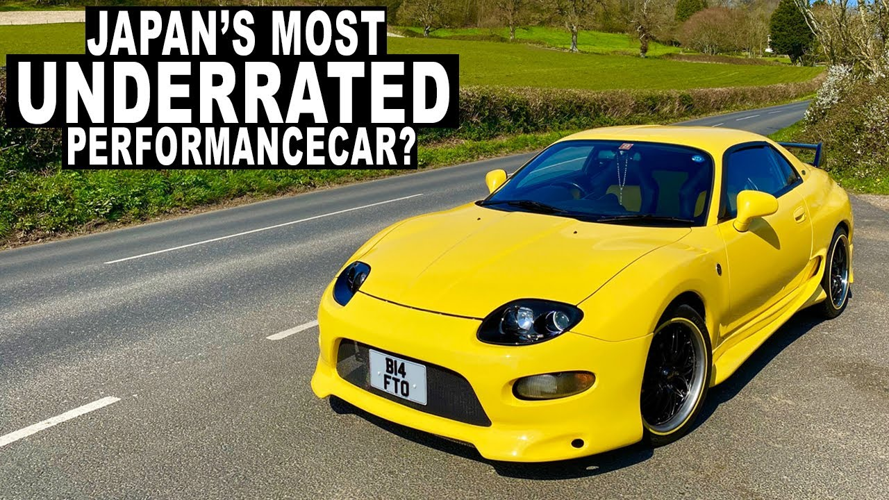

| Mitsubishi fto | ||
|---|---|---|
| Year: | Power: | 0-100: |
| 1994 | 199hp | 6 second |
| 1994 | 173hp | 8 second |
| 1995 | 180hp | 7,5 second |
| My car | ||
| 1730hp | 7,8 second | |
| 173hp | 7,7 second | |
| Best car in 1994 | ||
The FTO isn’t just pleasingly quick in a straight line either – these cars can be hustled around the bends. Don’t believe me? Here’s an exciting track battle from a 1997 episode of Best Motoring, showing the FTO GP Version R (admittedly the best FTO that was built, and the most desirable model) performing well in a circuit race against a number of supposedly superior 1990s performance cars like the DC2 Integra Type R and Civic Type R.
If you like my page please contact me:
contact
Kutaisi city
Balakhvani
Mr.Daviti